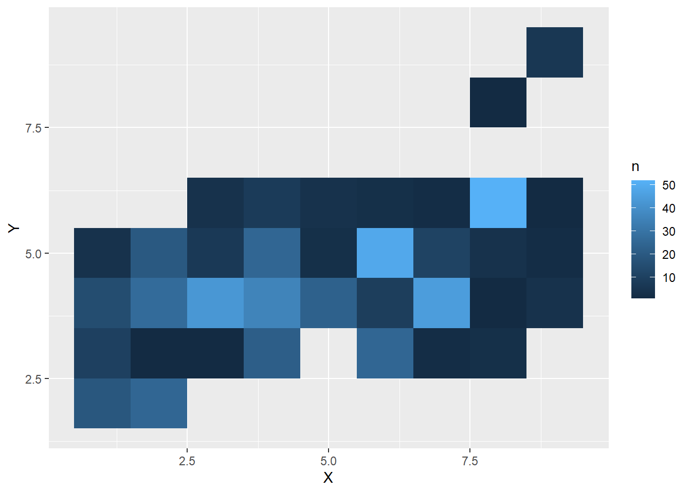

Poglavje 1 Slovnica ravnanja s podatki
Pri sistematičnem delu s podatki je zelo pomembna berljivost in preglednost programske kode. Pri delu velikokrat delimo svojo programsko kodo z drugimi strokovnjaki, zato je zaželjeno, da je koda pregledna in razumljiva. Lahko se tudi zgodi, da imamo težave z razumevanjem svoje starejše kode. Zaradi tega je smiselno, da stremimo k čimvečji konsistentnosti in preglednosti. Na dolgi rok s tem prihranimo čas – s konsistentno uporabo enakih ukazov postanemo bolj učinkoviti, prav tako pa lažje prenesemo programsko kodo iz enega problema na drugega. Naša programska koda je s tem bolj robustna in ponovljiva, kar je pomembno iz vidika iskanja napak v analizah. Dober primer konsistentnosti in razumljivosti za sporazumevanje je naraven jezik – v kolikor dve osebi govorita enak jezik se bosta brez težav sporazumevali. Lahko si predstavljate, da ne boste imeli težav z razumevanjem teksta v slovenščini, če se bo avtor držal slovničnih in pravopisnih pravil. Tako kot se pri naravnem jeziku držimo določenih pravil, lahko podobno dosežemo tudi s programskim jezikom.
V tem predavanju se bomo osredotočili na temeljne operacije, ki jih izvajamo nad podatki. Te operacije so nepogrešljive pri vsaki analizi:
- izbira podmnožice vrstic,
- izbira podmnožice stolpcev,
- dodajanje stolpcev, ki so lahko izpeljani iz obstoječih stolpcev,
- urejanje razpredelnice glede na vrednosti stolpcev,
- povzemanje razpredelnic, na primer povprečja in vsote.
Paket dplyr vsebuje funkcije, ki nam v primerjavi z osnovno različico R-ja, te operacije olajšajo. Temelji na t. i. slovnici ravnanja s podatki (ang. grammar of data manipulation), ki programsko kodo pretvori v nekaj podobnega naravnemu jeziku.
Pri slovnici ravnanja s podatki poznamo 5 osnovnih glagolov, s katerimi preoblikujemo podatke. Vsak glagol ustreza eni izmed temeljnih operacij, ki smo jih omenili zgoraj. Programska koda se potem bere podobno kot naravni jezik – glagoli programskemu jeziku povedo, kaj naj s podatki naredi. Ti glagoli so implementirani v obliki funkcij:
filter()Izbira podmnožice vrstic glede na izbrane pogoje.select()Izbira podmnožice stolpcev, glede na imena stolpcev.mutate()Dodajanje stolpcev, ki so lahko izpeljani iz obstoječih stolpcev.summarise()Povzemanje podatkov v razpredelnici.arrange()Urejanje razpredelnice.
V tem predavanju bomo bolj podrobno spoznali vsakega izmed teh glagolov. Po tem pa si bomo ogledali še dva uporabna povzetka – povzemanje po vrsticah in povzemanje po stolpcih.
1.1 Priprava
V pripravi se bomo naučili osnovnih klicev petih glagolov iz slovnice ravnanja s podatki. Hkrati bomo primerjali osnovno različico R-ja z uporabo paketa dplyr. Pripravimo podatke:
library(tidyverse) # Nalozimo celotno zbirko paketov tidyverse.
df <- data.frame(
ime = c("Maja", "Ales", "Tom", "Barbara", "Simon", "Tina"),
spol = c("z", "m", "m", "z", "m", "z"),
starost = c(23, 54, 21, 35, 53, 21),
visina = c(170, 180, 192, 168, 177, 182)
)S funkcijo filter() izberemo podmnožico vrstic v razpredelnici glede na izbrane pogoje. Izberimo ženske nižje od 180 centimetrov.
# Osnovni R:
df[df$spol == "z" & df$visina < 180, ]## ime spol starost visina
## 1 Maja z 23 170
## 4 Barbara z 35 168# dplyr:
filter(df, spol == "z", visina < 180)## ime spol starost visina
## 1 Maja z 23 170
## 2 Barbara z 35 168Opazimo, da z uporabo dplyr ni potrebno vsakič pisati df$ pred imenom spremenljivke. Tukaj gre za t. i. maskiranje podatkov (ang. data masking). Več o tem v jedru poglavja.
S funkcijo select() izberemo podmnožico stolpcev. Izberimo stolpce ime, spol in visina:
# Osnovni R:
df[ , c("ime", "spol", "visina")]## ime spol visina
## 1 Maja z 170
## 2 Ales m 180
## 3 Tom m 192
## 4 Barbara z 168
## 5 Simon m 177
## 6 Tina z 182# dplyr:
select(df, ime, spol, visina)## ime spol visina
## 1 Maja z 170
## 2 Ales m 180
## 3 Tom m 192
## 4 Barbara z 168
## 5 Simon m 177
## 6 Tina z 182Opazimo, da nam pri uporabi dplyr stolpcev ni potrebno pisati v narekovajih. Tukaj gre za t. i. urejeno izbiranje (ang. tidy selection). Več o tem v jedru poglavja.
S funkcijo mutate() dodajamo stolpce. Dodajmo višino v metrih:
# Osnovni R:
df2 <- df
df2$visina_v_metrih <- df2$visina / 100
df2## ime spol starost visina visina_v_metrih
## 1 Maja z 23 170 1.70
## 2 Ales m 54 180 1.80
## 3 Tom m 21 192 1.92
## 4 Barbara z 35 168 1.68
## 5 Simon m 53 177 1.77
## 6 Tina z 21 182 1.82# dplyr:
mutate(df, visina_v_metrih = visina / 100)## ime spol starost visina visina_v_metrih
## 1 Maja z 23 170 1.70
## 2 Ales m 54 180 1.80
## 3 Tom m 21 192 1.92
## 4 Barbara z 35 168 1.68
## 5 Simon m 53 177 1.77
## 6 Tina z 21 182 1.82S funkcijo arrange() urejamo razpredelnico. Uredimo osebe po starosti:
# Osnovni R:
df[order(df$starost), ]## ime spol starost visina
## 3 Tom m 21 192
## 6 Tina z 21 182
## 1 Maja z 23 170
## 4 Barbara z 35 168
## 5 Simon m 53 177
## 2 Ales m 54 180# dplyr:
arrange(df, starost)## ime spol starost visina
## 1 Tom m 21 192
## 2 Tina z 21 182
## 3 Maja z 23 170
## 4 Barbara z 35 168
## 5 Simon m 53 177
## 6 Ales m 54 180S funkcijo summarise() povzamemo podatke. Običajno se uporablja v kombinaciji z group_by(). Izračunajmo povprečno višino glede na spol:
# Osnovni R:
aggregate(visina ~ spol, data = df, FUN = mean)## spol visina
## 1 m 183.0000
## 2 z 173.3333# dplyr:
summarise(group_by(df, spol), povp_visina = mean(visina))## # A tibble: 2 x 2
## spol povp_visina
## <chr> <dbl>
## 1 m 183
## 2 z 173.Naloga: Poglejmo si nov primer podatkov.
df <- data.frame(
podjetje = c("A", "B", "C", "D", "E"),
panoga = c("proizvodnja", "gostinstvo", "proizvodnja", "gostinstvo", "proizvodnja"),
st_zaposlenih = c(100, 20, 110, 15, 20),
dobicek = c(100000, 10000, 12000, 1000, 0)
)Z uporabo dplyr:
- Izberite vrstice, ki imajo med (vključno) 10000 in 20000 dobička.
## podjetje panoga st_zaposlenih dobicek
## 1 B gostinstvo 20 10000
## 2 C proizvodnja 110 12000- Izberite drugi in četrti stolpec.
## panoga dobicek
## 1 proizvodnja 100000
## 2 gostinstvo 10000
## 3 proizvodnja 12000
## 4 gostinstvo 1000
## 5 proizvodnja 0- Dodajte stolpec, ki bo prikazal dobiček na zaposlenega.
## podjetje panoga st_zaposlenih dobicek dobicek_na_zaposlenega
## 1 A proizvodnja 100 100000 1000.00000
## 2 B gostinstvo 20 10000 500.00000
## 3 C proizvodnja 110 12000 109.09091
## 4 D gostinstvo 15 1000 66.66667
## 5 E proizvodnja 20 0 0.00000- Uredite podjetja po številu zaposlenih.
## podjetje panoga st_zaposlenih dobicek
## 1 D gostinstvo 15 1000
## 2 B gostinstvo 20 10000
## 3 E proizvodnja 20 0
## 4 A proizvodnja 100 100000
## 5 C proizvodnja 110 12000- Poiščite maksimalno število zaposlenih glede na panogo.
## # A tibble: 2 x 2
## panoga max_st_zaposlenih
## <chr> <dbl>
## 1 gostinstvo 20
## 2 proizvodnja 1101.2 Sodobna razpredelnica: tibble
Najprej si poglejmo podatke, na katerih se bomo naučili osnovnih konceptov slovnice ravnanja s podatki. V mapi data-raw se nahajajo podatki DS-jobs.csv. Gre za rezultate ankete, ki so jo v povezavi z industrijo izvedli na spletni strani Kaggle (https://www.kaggle.com/kaggle/kaggle-survey-2017) leta 2017 z namenom raziskati trg dela na področju podatkovnih ved in strojnega učenja. Podatki so shranjeni v tekstovni datoteki, kjer so elementi ločeni s podpičjem. Preberimo podatke v našo sejo R:
ds_jobs <- read.csv2("./data-raw/DS-jobs.csv")
head(ds_jobs)## Gender Country Age EmploymentStatus
## 1 Female Australia 43 Employed full-time
## 2 Male Russia 33 Employed full-time
## 3 Male Taiwan 26 Employed full-time
## 4 Male United States 25 Employed part-time
## 5 Male United States 33 Employed full-time
## 6 Male Czech Republic 21 Employed part-time
## CurrentJobTitle LanguageRecommendation
## 1 Business Analyst Python
## 2 Software Developer/Software Engineer Python
## 3 Software Developer/Software Engineer Python
## 4 Researcher Python
## 5 Scientist/Researcher Matlab
## 6 Other Python
## FormalEducation
## 1 Bachelor's degree
## 2 Bachelor's degree
## 3 Master's degree
## 4 Bachelor's degree
## 5 Doctoral degree
## 6 Some college/university study without earning a bachelor's degree
## Major CompensationAmount CompensationCurrency
## 1 80000 AUD
## 2 Other 1200000 RUB
## 3 Computer Science 1100000 TWD
## 4 Physics 20000 USD
## 5 Electrical Engineering 100000 USD
## 6 Computer Science 20000 CZK
## TimeGatheringData TimeModelBuilding TimeProduction TimeVisualizing
## 1 60 10 5 15
## 2 40 30 15 10
## 3 35 20 25 10
## 4 0 80 0 20
## 5 0 0 0 0
## 6 20 60 20 0
## TimeFindingInsights TimeOtherSelect ExchangeRate
## 1 10 0 0.802310
## 2 5 0 0.017402
## 3 10 0 0.033304
## 4 0 0 1.000000
## 5 0 0 1.000000
## 6 0 0 0.045820Spremenljivka ds_jobs je tipa data.frame. To je osnovna oblika, v kateri v R hranimo razpredelnice. V tidyverse obstaja paket tibble, ki je namenjen sodobni predstavitvi razpredelnice. Glavna funkcionalnost tega paketa je objekt tibble, ki predstavlja nadgradnjo data frame. V preostanku knjige bomo za objekte data.frame uporabljali izraz “data frame” in za objekte tipa tibble izraz “tibble.” Večina funkcij v tidyverse sicer lahko kot vhodni podatek prejme data frame, ampak ga nekatere potem samodejno pretvorijo v tibble. Kot dobro prakso predlagamo delo izključno s tibble. Poleg kompatibilnosti s funkcijami tidyverse je še nekaj drugih razlik v primerjavi z data frame, večino le-teh bomo spoznali v preostanku knjige.
Pretvorimo sedaj ta data frame v tibble s funkcijo as_tibble().
library(tidyverse)
ds_jobs <- as_tibble(ds_jobs)
ds_jobs## # A tibble: 4,523 x 17
## Gender Country Age EmploymentStatus CurrentJobTitle LanguageRecomme~
## <chr> <chr> <int> <chr> <chr> <chr>
## 1 Female Austral~ 43 Employed full-time Business Analyst Python
## 2 Male Russia 33 Employed full-time Software Develop~ Python
## 3 Male Taiwan 26 Employed full-time Software Develop~ Python
## 4 Male United ~ 25 Employed part-time Researcher Python
## 5 Male United ~ 33 Employed full-time Scientist/Resear~ Matlab
## 6 Male Czech R~ 21 Employed part-time Other Python
## 7 Male Russia 22 Employed full-time Data Analyst Python
## 8 Male Netherl~ 51 Employed full-time Engineer R
## 9 Male Colombia 34 Employed full-time Data Scientist Python
## 10 Male Germany 41 Independent contrac~ Data Scientist Python
## # ... with 4,513 more rows, and 11 more variables: FormalEducation <chr>,
## # Major <chr>, CompensationAmount <dbl>, CompensationCurrency <chr>,
## # TimeGatheringData <int>, TimeModelBuilding <dbl>, TimeProduction <dbl>,
## # TimeVisualizing <dbl>, TimeFindingInsights <dbl>, TimeOtherSelect <int>,
## # ExchangeRate <dbl>Opazimo, da je oblika prikaza podatkov sedaj nekoliko drugačna. Najbolj očitna razlika je, da imamo na zaslonu prikazanih samo toliko stolpcev, kot jih je možno prikazati na zaslonu. Preostali stolpci so samo zapisani zaporedno z imeni, da lahko vidimo, katere stolpce še imamo v podatkih. S tem preprečimo, da bi izpis postal nepregleden. Še vedno lahko vidimo vse oziroma več stolpcev z uporabo View() ali pa če tibble izpišemo s pomočjo print() in ustrezno nastavitvijo širine, na primer print(ds_jobs, width = 120). Izpis tibble pa nam nudi še nekaj dodatnih informacij v primerjavi z data frame. V prvi vrstici imamo izpisano dimenzijo podatkov – število vrstic in število stolpcev. Pod vsako spremenljivko je zapisan tudi njen tip. Tibble tudi dopušča imena stolpcev, ki niso standardna za R (na primer vsebujejo - in podobno), čeprav uporaba takih imen ni dobra praksa. Več o tem bomo povedali kasneje.
1.3 Urejeno ovrednotenje
Preden začnemo resneje delati z glagoli slovnice ravnanja s podatki, spoznajmo t. i. urejeno ovrednotenje (ang. tidy evaluation). To je posebnost tidyverse in večina glagolov v dplyr ga uporablja. Kaj pa je urejeno ovrednotenje? To je nestandarden pristop k ovrednotenju izrazov v programskem jeziku R. V pripravi smo že srečali dva primera:
- Pri funkciji
filter()ni bilo potrebno vsakič navestidf$za izbiro spremenljivk iz razpredelnice. - Pri funkciji
select()nismo potrebovali narekovajev.
Oba sta primera dveh vrst urejenega ovrednotenja:
- Pri nekaterih glagolih v dplyr lahko uporabimo spremenljivke (stolpce) tibbla (ali razpredelnice), kot da bi bile spremenljivke v globalnem okolju (torej lahko uporabimo
moja_spremenljivkanamestodf$moja_spremenljivka). Temu pravimo maskiranje podatkov (ang. data masking). Funkcije, ki podpirajo to strukturo in jih bomo spoznali v nadaljevanju so:arrange(),count(),filter(),group_by(),mutate()insummarise(). - Pri nekaterih glagolih v dplyr lahko na lažji način izberemo spremenljivke (stolpce) glede na njihovo pozicijo, ime ali tip (na primer izbira stolpcev po imenu brez narekovajev, izbira stolpcev ki se začnejo na določen niz, izbira samo številskih stolpcev). Temu pravimo urejeno izbiranje (ang. tidy selection). Funkcije, ki podpirajo to strukturo so:
across(),count(),rename(),select()inpull().
Informacije o tem, ali funkcija vsebuje maskiranje podatkov ali urejeno izbiranje, lahko najdemo v datoteki s pomočjo pod razdelkom Arguments.
1.4 Izbira vrstic s filter()
S funkcijo filter() izbiramo podmnožico vrstic glede na izbrane pogoje. Sintaksa je:
filter(<tibble>, <pogoj1>, <pogoj2>, ...)Kot prvi argument podamo tibble s podatki, potem pa z vejicami ločene pogoje. Izberimo vse osebe mlajše od 30 let:
library(dplyr)
filter(ds_jobs, Age < 30)## # A tibble: 1,729 x 17
## Gender Country Age EmploymentStatus CurrentJobTitle LanguageRecommen~
## <chr> <chr> <int> <chr> <chr> <chr>
## 1 Male Taiwan 26 Employed full-t~ Software Developer~ Python
## 2 Male United S~ 25 Employed part-t~ Researcher Python
## 3 Male Czech Re~ 21 Employed part-t~ Other Python
## 4 Male Russia 22 Employed full-t~ Data Analyst Python
## 5 Male Poland 29 Employed full-t~ Software Developer~ Python
## 6 Male Other 28 Employed full-t~ Data Scientist R
## 7 Male Mexico 26 Employed part-t~ Data Scientist Python
## 8 Male Singapore 24 Employed full-t~ Data Analyst Python
## 9 Male India 29 Employed full-t~ Data Scientist R
## 10 Male United S~ 25 Employed full-t~ Engineer Python
## # ... with 1,719 more rows, and 11 more variables: FormalEducation <chr>,
## # Major <chr>, CompensationAmount <dbl>, CompensationCurrency <chr>,
## # TimeGatheringData <int>, TimeModelBuilding <dbl>, TimeProduction <dbl>,
## # TimeVisualizing <dbl>, TimeFindingInsights <dbl>, TimeOtherSelect <int>,
## # ExchangeRate <dbl>Več pogojev ločimo z vejico, kadar želimo, da veljajo vsi pogoji (enakovredno uporabi operatorja in – & pri naštevanju pogojev). Poglejmo si vse osebe mlajše od 30 let, ki prihajajo iz Nemčije:
filter(ds_jobs, Age < 30, Country == "Germany")## # A tibble: 42 x 17
## Gender Country Age EmploymentStatus CurrentJobTitle LanguageRecomme~
## <chr> <chr> <int> <chr> <chr> <chr>
## 1 Female Germany 24 Employed part-time Scientist/Resear~ R
## 2 Male Germany 28 Employed full-time Scientist/Resear~ Python
## 3 Male Germany 24 Independent contract~ Data Scientist Python
## 4 Female Germany 29 Employed full-time Business Analyst SQL
## 5 Male Germany 26 Employed part-time Researcher Python
## 6 Male Germany 27 Employed full-time Data Scientist Python
## 7 Female Germany 26 Employed part-time Statistician R
## 8 Male Germany 26 Independent contract~ Data Scientist Python
## 9 Male Germany 29 Employed full-time Machine Learning~ Python
## 10 Male Germany 25 Employed full-time Data Scientist Python
## # ... with 32 more rows, and 11 more variables: FormalEducation <chr>,
## # Major <chr>, CompensationAmount <dbl>, CompensationCurrency <chr>,
## # TimeGatheringData <int>, TimeModelBuilding <dbl>, TimeProduction <dbl>,
## # TimeVisualizing <dbl>, TimeFindingInsights <dbl>, TimeOtherSelect <int>,
## # ExchangeRate <dbl>V kolikor želimo, da velja vsaj eden izmed pogojev, moramo uporabiti operator ali – |. Poglejmo si vse osebe mlajše od 30 ali starejše od 50 let:
filter(ds_jobs, Age < 30 | Age > 50)## # A tibble: 2,006 x 17
## Gender Country Age EmploymentStatus CurrentJobTitle LanguageRecommen~
## <chr> <chr> <int> <chr> <chr> <chr>
## 1 Male Taiwan 26 Employed full-t~ Software Developer~ Python
## 2 Male United S~ 25 Employed part-t~ Researcher Python
## 3 Male Czech Re~ 21 Employed part-t~ Other Python
## 4 Male Russia 22 Employed full-t~ Data Analyst Python
## 5 Male Netherla~ 51 Employed full-t~ Engineer R
## 6 Male Poland 29 Employed full-t~ Software Developer~ Python
## 7 Male Other 28 Employed full-t~ Data Scientist R
## 8 Male Mexico 26 Employed part-t~ Data Scientist Python
## 9 Male Singapore 24 Employed full-t~ Data Analyst Python
## 10 Male India 29 Employed full-t~ Data Scientist R
## # ... with 1,996 more rows, and 11 more variables: FormalEducation <chr>,
## # Major <chr>, CompensationAmount <dbl>, CompensationCurrency <chr>,
## # TimeGatheringData <int>, TimeModelBuilding <dbl>, TimeProduction <dbl>,
## # TimeVisualizing <dbl>, TimeFindingInsights <dbl>, TimeOtherSelect <int>,
## # ExchangeRate <dbl>Če želimo nek kategorični stolpec pogojiti z večimi vrednostmi (na primer udeležence iz večih držav), lahko namesto večih | uporabimo operator %in%, ki preveri, če je element del množice:
filter(ds_jobs, Country %in% c("Germany", "Canada", "Ireland"))## # A tibble: 306 x 17
## Gender Country Age EmploymentStatus CurrentJobTitle LanguageRecomme~
## <chr> <chr> <int> <chr> <chr> <chr>
## 1 Male Germany 41 Independent contrac~ Data Scientist Python
## 2 Female Germany 49 Employed part-time Scientist/Resea~ Python
## 3 Male Germany 44 Employed full-time Other Python
## 4 A diffe~ Canada 23 Employed full-time Scientist/Resea~ Python
## 5 Female Germany 24 Employed part-time Scientist/Resea~ R
## 6 Male Canada 52 Employed full-time Software Develo~ Python
## 7 Male Ireland 27 Employed full-time Data Scientist Python
## 8 Male Canada 24 Employed full-time Business Analyst Python
## 9 Male Canada 46 Employed full-time Data Scientist Python
## 10 Male Canada 31 Employed full-time Data Analyst R
## # ... with 296 more rows, and 11 more variables: FormalEducation <chr>,
## # Major <chr>, CompensationAmount <dbl>, CompensationCurrency <chr>,
## # TimeGatheringData <int>, TimeModelBuilding <dbl>, TimeProduction <dbl>,
## # TimeVisualizing <dbl>, TimeFindingInsights <dbl>, TimeOtherSelect <int>,
## # ExchangeRate <dbl>1.4.1 Manjkajoče vrednosti
Vrstice pogosto filtriramo na podlagi manjkajočih vrednosti. Včasih so te pomembne za samo analizo, saj nas lahko zanimajo razlogi za njihov pojav. Včasih pa so to nepomembne vrstice, saj nam ne prinesejo dodatne informacije. V tem primeru jih običajno kar izločimo iz nadaljnje analize.
V nadaljevanju bomo spoznali, kako dodati nov stolpec, in to ilustrirali na izračunu plače v dolarjih. Za to bomo potrebovali stolpca CompensationAmount in ExchangeRate. V slednjem je kar nekaj manjkajočih vrednosti. Takšne vrstice bodo za analizo plač neuporabne, zato jih bomo sedaj izločili iz podatkov. Ali je vrednost enaka NA (objekt, ki predstavlja manjkajočo vrednost v R) preverimo s funkcijo is.na(). Izločimo sedaj te vrstice:
ds_jobs <- filter(ds_jobs, !is.na(ExchangeRate))Podobno kot v zgornjem primeru lahko v pogoju nastopa poljubna funkcija.
1.5 Izbira stolpcev s select()
S funkcijo select() izbiramo podmnožico stolpcev. Osnovna sintaksa je:
filter(<tibble>, <stolpec1>, <stolpec2>, ...)Izberimo sedaj stolpce Country, Age in EmploymentStatus.
select(ds_jobs, Country, Age, EmploymentStatus)## # A tibble: 3,781 x 3
## Country Age EmploymentStatus
## <chr> <int> <chr>
## 1 Australia 43 Employed full-time
## 2 Russia 33 Employed full-time
## 3 Taiwan 26 Employed full-time
## 4 United States 25 Employed part-time
## 5 United States 33 Employed full-time
## 6 Czech Republic 21 Employed part-time
## 7 Russia 22 Employed full-time
## 8 Colombia 34 Employed full-time
## 9 Germany 41 Independent contractor, freelancer, or self-employed
## 10 Poland 29 Employed full-time
## # ... with 3,771 more rowsIzberimo vse stolpce razen teh treh stolpcev. Za to enostavno dodamo minus pred imenom stolpca, ki ga želimo izločiti:
select(ds_jobs, -Country, -Age, -EmploymentStatus)## # A tibble: 3,781 x 14
## Gender CurrentJobTitle LanguageRecommen~ FormalEducation Major
## <chr> <chr> <chr> <chr> <chr>
## 1 Female Business Analyst Python Bachelor's degree ""
## 2 Male Software Develope~ Python Bachelor's degree "Other"
## 3 Male Software Develope~ Python Master's degree "Computer ~
## 4 Male Researcher Python Bachelor's degree "Physics"
## 5 Male Scientist/Researc~ Matlab Doctoral degree "Electrica~
## 6 Male Other Python Some college/univers~ "Computer ~
## 7 Male Data Analyst Python Bachelor's degree "Informati~
## 8 Male Data Scientist Python Master's degree "Computer ~
## 9 Male Data Scientist Python I did not complete a~ ""
## 10 Male Software Develope~ Python Master's degree "Computer ~
## # ... with 3,771 more rows, and 9 more variables: CompensationAmount <dbl>,
## # CompensationCurrency <chr>, TimeGatheringData <int>,
## # TimeModelBuilding <dbl>, TimeProduction <dbl>, TimeVisualizing <dbl>,
## # TimeFindingInsights <dbl>, TimeOtherSelect <int>, ExchangeRate <dbl>Izberimo vse stolpce med Country in Major. Podobno kot v R 1:10 našteje vsa cela števila med 1 in 10, operator : v tidyverse izbere vse stolpce med Country in Major:
select(ds_jobs, Country:Major)## # A tibble: 3,781 x 7
## Country Age EmploymentStatus CurrentJobTitle LanguageRecommen~
## <chr> <int> <chr> <chr> <chr>
## 1 Australia 43 Employed full-time Business Analyst Python
## 2 Russia 33 Employed full-time Software Developer~ Python
## 3 Taiwan 26 Employed full-time Software Developer~ Python
## 4 United S~ 25 Employed part-time Researcher Python
## 5 United S~ 33 Employed full-time Scientist/Research~ Matlab
## 6 Czech Re~ 21 Employed part-time Other Python
## 7 Russia 22 Employed full-time Data Analyst Python
## 8 Colombia 34 Employed full-time Data Scientist Python
## 9 Germany 41 Independent contractor~ Data Scientist Python
## 10 Poland 29 Employed full-time Software Developer~ Python
## # ... with 3,771 more rows, and 2 more variables: FormalEducation <chr>,
## # Major <chr>Izberimo vse stolpce, ki se začnejo z besedo Time. Za to bomo uporabili funkcijo starts_with(). Ta funkcija je t. i. selection helper, kar pomeni, da jo lahko uporabimo le znotraj funkcij, ki omogočajo urejeno izbiro in nam omogoča lažjo izbiro na podlagi nekega pogoja. V tem primeru je ta pogoj, da se beseda začne na določen niz:
select(ds_jobs, starts_with("Time"))## # A tibble: 3,781 x 6
## TimeGatheringData TimeModelBuilding TimeProduction TimeVisualizing
## <int> <dbl> <dbl> <dbl>
## 1 60 10 5 15
## 2 40 30 15 10
## 3 35 20 25 10
## 4 0 80 0 20
## 5 0 0 0 0
## 6 20 60 20 0
## 7 50 20 10 5
## 8 60 10 20 5
## 9 50 10 20 10
## 10 25 20 25 20
## # ... with 3,771 more rows, and 2 more variables: TimeFindingInsights <dbl>,
## # TimeOtherSelect <int>Poleg starts_with() dplyr vsebuje še več takšnih funkcij:
ends_with()Ali se ime stolpca konča na določen niz?contains()Ali ime stolpca vsebuje niz?matches()Ali ime stolpca ustreza regularnemu izrazu? Več o regularnih izrazih bomo povedali v 3. predavanju.num_range()Ali ime stolpca vsebuje števila znotraj množice števil? Na primer, če imamo stolpce, ki v imenu vsebujejo števila – stolpec1, stolpec2, in tako naprej.
1.6 Urejanje vrstic z arrange()
Vrstice lahko tudi uredimo glede na vrednosti v posameznih stolpcih. Za to uporabimo funkcijo arrange(). Sintaksa te funkcije je:
arrange(<tibble>, <stolpec1>, <stolpec2>, ...)kjer stolpci predstavljajo vrednosti, po katerih želimo urediti tibble.
Ustvarimo najprej nov tibble, v katerem bomo izbrali podmnožico stolpcev.
ds_jobs_tmp <- select(ds_jobs, CurrentJobTitle, Country,
CompensationCurrency, Age, CompensationAmount)Uredimo sedaj podatke glede na leta:
arrange(ds_jobs_tmp, Age)## # A tibble: 3,781 x 5
## CurrentJobTitle Country CompensationCurre~ Age CompensationAmo~
## <chr> <chr> <chr> <int> <dbl>
## 1 Predictive Modeler Australia AUD 0 78000
## 2 Scientist/Researcher United St~ USD 1 100000
## 3 Programmer Other GBP 11 0
## 4 Data Scientist United St~ USD 16 50000
## 5 Software Developer/Soft~ Russia USD 18 40000
## 6 Programmer Other USD 18 1000
## 7 Machine Learning Engine~ Other USD 19 30000
## 8 Programmer Russia USD 19 40000
## 9 Scientist/Researcher Canada CAD 19 0
## 10 Computer Scientist Brazil BRL 19 400
## # ... with 3,771 more rowsOpazimo, da imamo nekaj neveljavnih starosti, na primer 0 in 1, najverjetneje tudi 11. Prav tako imamo nekaj nesmiselnih vrednosti v stolpcu o plači. Pri celostni analizi bi seveda raziskali, zakaj je prišlo do takih vrednosti, oziroma bi jih izločili iz analize. Za namen spoznavanja ravnanja s podatki in dplyr to ni pomembno, tako da temu ne bomo posvečali pozornosti. Bralcem pa predlagamo, naj razmislijo, kako bi se tega lotili z že naučenimi koncepti.
Če želimo podatke urediti padajoče, potem uporabimo funkcijo desc():
arrange(ds_jobs_tmp, desc(Age))## # A tibble: 3,781 x 5
## CurrentJobTitle Country CompensationCurre~ Age CompensationAmo~
## <chr> <chr> <chr> <int> <dbl>
## 1 Statistician United Ki~ ILS 100 100000000000
## 2 Other Other EUR 99 15000
## 3 Researcher Portugal EUR 78 63000
## 4 Data Scientist Canada USD 75 110
## 5 Software Developer/Soft~ Netherlan~ EUR 73 40000
## 6 Data Analyst Russia USD 70 14000
## 7 Business Analyst United St~ USD 70 130000
## 8 Machine Learning Engine~ United Ki~ GBP 70 40000
## 9 Scientist/Researcher United St~ USD 69 200000
## 10 Business Analyst United St~ USD 68 125000
## # ... with 3,771 more rowsUredimo lahko tudi glede na več stolpcev, kjer se najprej uredi po prvem zapisanem, nato drugem, itd.:
arrange(ds_jobs_tmp, Age, CompensationAmount)## # A tibble: 3,781 x 5
## CurrentJobTitle Country CompensationCurre~ Age CompensationAmo~
## <chr> <chr> <chr> <int> <dbl>
## 1 Predictive Modeler Australia AUD 0 78000
## 2 Scientist/Researcher United St~ USD 1 100000
## 3 Programmer Other GBP 11 0
## 4 Data Scientist United St~ USD 16 50000
## 5 Programmer Other USD 18 1000
## 6 Software Developer/Soft~ Russia USD 18 40000
## 7 Scientist/Researcher Canada CAD 19 0
## 8 Computer Scientist Brazil BRL 19 400
## 9 Machine Learning Engine~ Other USD 19 30000
## 10 Programmer Russia USD 19 40000
## # ... with 3,771 more rows1.7 Dodajanje novih spremenljivk z mutate()
Pogosto želimo ustvariti nove stolpce, ki so izpeljani iz obstoječih stolpcev. Pri naših podatkih imamo stolpec CompensationAmount, ki predstavlja letno plačo in ExchangeRate, ki predstavlja menjalni tečaj lokalne valute v ameriški dolar. Če želimo imeti primerljive podatke, moramo izračunati vrednosti v dolarjih za vse podatke. Za to uporabimo funkcijo mutate(), ki doda stolpec (ali več stolpcev). Sintaksa funkcije je:
<tibble> <- mutate(<tibble>, <ime-novega-stolpca> = <funkcija-obstoječih-stolpcev>, ...)Dodajmo stolpec CompensationUSD, ki bo prikazal letno plačo v USD:
ds_jobs <- mutate(ds_jobs, CompensationUSD = CompensationAmount * ExchangeRate)
select(ds_jobs, CompensationAmount, ExchangeRate, CompensationUSD)## # A tibble: 3,781 x 3
## CompensationAmount ExchangeRate CompensationUSD
## <dbl> <dbl> <dbl>
## 1 80000 0.802 64185.
## 2 1200000 0.0174 20882.
## 3 1100000 0.0333 36634.
## 4 20000 1 20000
## 5 100000 1 100000
## 6 20000 0.0458 916.
## 7 624000 0.0174 10859.
## 8 156000000 0.000342 53352
## 9 150000 1.20 179374.
## 10 126000 0.281 35419.
## # ... with 3,771 more rowsZnotraj klica mutate() lahko uporabimo stolpce, ki smo jih ustvarili v istem klicu v preteklih vrsticah. Recimo, da želimo poleg plače v USD izračunati še mesečno plačo v USD:
ds_jobs <- mutate(ds_jobs,
CompensationUSD = CompensationAmount * ExchangeRate,
MonthlyCompUSD = CompensationUSD / 12)
select(ds_jobs, CompensationAmount, ExchangeRate, CompensationUSD, MonthlyCompUSD)## # A tibble: 3,781 x 4
## CompensationAmount ExchangeRate CompensationUSD MonthlyCompUSD
## <dbl> <dbl> <dbl> <dbl>
## 1 80000 0.802 64185. 5349.
## 2 1200000 0.0174 20882. 1740.
## 3 1100000 0.0333 36634. 3053.
## 4 20000 1 20000 1667.
## 5 100000 1 100000 8333.
## 6 20000 0.0458 916. 76.4
## 7 624000 0.0174 10859. 905.
## 8 156000000 0.000342 53352 4446
## 9 150000 1.20 179374. 14948.
## 10 126000 0.281 35419. 2952.
## # ... with 3,771 more rows1.8 Povzemanje vrednosti s summarise()
Funkcija summarise() se uporablja za povzemanje vrednosti (na primer povprečja, vsote, števci, …). Sintaksa funkcije je:
summarise(<tibble>, <ime-povzetka> = <funkcija-ki-povzame-stolpec>, ...)Najprej poglejmo delovanje te funkcije, tako da povzamemo povprečen čas priprave podatkov:
summarise(ds_jobs, MeanDataCleaning = mean(TimeGatheringData))## # A tibble: 1 x 1
## MeanDataCleaning
## <dbl>
## 1 37.3Funkcija enostavno vrne povprečje stolpca TimeGatheringData. Ta informacija je sicer uporabna, ampak to ni edina funkcionalnost te funkcije in je običajno ne uporabljamo v tej obliki. Njena moč se izrazi, ko jo uporabimo v kombinaciji z ukazom group_by(). Ta ukaz združi vrstice glede na vrednosti v podanih stolpcih. Združene vrednosti imajo posebno funkcijo v paketu dplyr in vplivajo na funkcionalnosti funkcij summarise(), mutate() in filter(). Vpliv grupiranja na mutate() in filter() si bomo ogledali nekoliko kasneje, poglejmo sedaj vpliv na summarise(). Recimo, da nas zanima, v katerih službah je potrebnega največ čiščenja podatkov. Najprej podatke združimo po stolpcu CurrentJobTitle, potem pa uporabimo summarise():
ds_jobs_grouped <- group_by(ds_jobs, CurrentJobTitle)
summarise(ds_jobs_grouped, MeanDataCleaning = mean(TimeGatheringData))## # A tibble: 17 x 2
## CurrentJobTitle MeanDataCleaning
## <chr> <dbl>
## 1 "" 40
## 2 "Business Analyst" 37.9
## 3 "Computer Scientist" 33.3
## 4 "Data Analyst" 41.2
## 5 "Data Miner" 48.0
## 6 "Data Scientist" 39.4
## 7 "DBA/Database Engineer" 37.7
## 8 "Engineer" 36.4
## 9 "Machine Learning Engineer" 34.7
## 10 "Operations Research Practitioner" 37.8
## 11 "Other" 36.3
## 12 "Predictive Modeler" 37.1
## 13 "Programmer" 35.8
## 14 "Researcher" 31.3
## 15 "Scientist/Researcher" 33.5
## 16 "Software Developer/Software Engineer" 36.9
## 17 "Statistician" 34.7Izgleda, da so povprečja kar blizu – čas čiščenja podatkov je relativno neodvisen od delovnega mesta.
Povzemamo lahko tudi preko večih stolpcev. Poglejmo si število ljudi z različnimi statusi zaposlitve v kombinaciji z izobrazbo. Da preštejemo število vrstic, ki ustrezajo grupiranju, uporabimo funkcijo n():
ds_jobs_grouped <- group_by(ds_jobs, FormalEducation, EmploymentStatus)
summarise(ds_jobs_grouped, Count = n())## # A tibble: 21 x 3
## # Groups: FormalEducation [8]
## FormalEducation EmploymentStatus Count
## <chr> <chr> <int>
## 1 "" Employed full-time 1
## 2 "Bachelor's degree" Employed full-time 857
## 3 "Bachelor's degree" Employed part-time 52
## 4 "Bachelor's degree" Independent contractor, freelanc~ 76
## 5 "Doctoral degree" Employed full-time 719
## 6 "Doctoral degree" Employed part-time 26
## 7 "Doctoral degree" Independent contractor, freelanc~ 50
## 8 "I did not complete any formal educa~ Employed full-time 13
## 9 "I did not complete any formal educa~ Employed part-time 2
## 10 "I did not complete any formal educa~ Independent contractor, freelanc~ 10
## # ... with 11 more rowsKer je štetje primerov zelo pogosta operacija, obstaja tudi funkcija count(), ki naredi enako kot kombinacija group_by() in summarise():
count(ds_jobs, FormalEducation, EmploymentStatus)## # A tibble: 21 x 3
## FormalEducation EmploymentStatus n
## <chr> <chr> <int>
## 1 "" Employed full-time 1
## 2 "Bachelor's degree" Employed full-time 857
## 3 "Bachelor's degree" Employed part-time 52
## 4 "Bachelor's degree" Independent contractor, freelanc~ 76
## 5 "Doctoral degree" Employed full-time 719
## 6 "Doctoral degree" Employed part-time 26
## 7 "Doctoral degree" Independent contractor, freelanc~ 50
## 8 "I did not complete any formal educa~ Employed full-time 13
## 9 "I did not complete any formal educa~ Employed part-time 2
## 10 "I did not complete any formal educa~ Independent contractor, freelanc~ 10
## # ... with 11 more rows1.9 Pipe
V praksi ravnanje s podatki zajame večino, če ne kar vseh funkcij, ki smo jih predstavili do sedaj. Če želimo sproti shranjevati naše spremembe, moramo po vsaki uporabi funkcije spremenjene podatke ponovno shraniti v spremenljivko. To lahko postane nekoliko nepregledno. Poglejmo si potek dela, kjer bomo nad osnovnimi podatki izvedli te operacije:
- Izbrali bomo vrstice, kjer so osebe starejše od 30 let in država ni
Otherali prazen niz. - Izločili vse stolpce, ki vsebujejo niz
Time. - Izračunali stolpec s plačo v ameriških dolarjih.
- Povzeli plačo glede na državo.
Z uporabo shranjevanja podatkov v spremenljivko, kot smo navajeni iz osnovne različice R, bi s funkcijami iz dplyr izgledalo takole:
ds_jobs2 <- read.csv2("./data-raw/DS-jobs.csv")
ds_jobs2 <- as_tibble(ds_jobs2)
ds_jobs2 <- filter(ds_jobs2, Age > 30, !(Country %in% c("Other", "")))
ds_jobs2 <- select(ds_jobs2, -contains("Time"))
ds_jobs2 <- mutate(ds_jobs2, CompensationUSD = CompensationAmount * ExchangeRate)
ds_jobs2 <- group_by(ds_jobs2, Country)
ds_jobs2_summarised <- summarise(ds_jobs2, MeanCompensation = mean(CompensationUSD, na.rm = T))
ds_jobs2_summarised## # A tibble: 51 x 2
## Country MeanCompensation
## <chr> <dbl>
## 1 Argentina 39282.
## 2 Australia 112800.
## 3 Belarus 33500
## 4 Belgium 74141.
## 5 Brazil 47799.
## 6 Canada 85471.
## 7 Chile 44152.
## 8 Colombia 43303.
## 9 Czech Republic 50223.
## 10 Denmark 88136.
## # ... with 41 more rowsPri računanju povprečja smo uporabili argument na.rm = T, s katerim smo manjkajoče vrednosti ignorirali. Celoten postopek je vseboval kar nekaj prepisovanja. Predvsem spremenljivko ds_jobs2 smo morali prepisati kar 6-krat. Dplyr pa vsebuje poseben operator, ki ga imenujemo pipe in ga označimo z %>%. S tem operatorjem funkcije povežemo v sosledje. Poglejmo si, kako deluje:
ds_jobs2 <- read.csv2("./data-raw/DS-jobs.csv")
ds_jobs2_summarised <- ds_jobs2 %>%
filter(Age > 30, !(Country %in% c("Other", ""))) %>%
select(-contains("Time")) %>%
mutate(CompensationUSD = CompensationAmount * ExchangeRate) %>%
group_by(Country) %>%
summarise(MeanCompensation = mean(CompensationUSD, na.rm = T))
ds_jobs2_summarised## # A tibble: 51 x 2
## Country MeanCompensation
## <chr> <dbl>
## 1 Argentina 39282.
## 2 Australia 112800.
## 3 Belarus 33500
## 4 Belgium 74141.
## 5 Brazil 47799.
## 6 Canada 85471.
## 7 Chile 44152.
## 8 Colombia 43303.
## 9 Czech Republic 50223.
## 10 Denmark 88136.
## # ... with 41 more rowsSedaj smo do povzetka prišli z zaporednim izvajanjem operacij nad spremenljivko ds_jobs. Ta način je bolj pregleden, saj bralec kode takoj opazi, da se je vse izvajalo nad istimi podatki. Opazimo tudi, zakaj gre za slovnico ravnanja s podatki. Programska koda zapisana zgoraj se bere skoraj kot naravni jezik. Na primer, izberi vrstice, kjer so leta večja od 30 in država ni v ustrezni množici. Zatem izberi stolpce, ki ne vsebujejo besede Time. Dodaj novo spremenljivko, združi podatke in jih povzemi.
1.10 filter() in mutate() na združenih podatkih
Spoznali smo, kako funkcija group_by() vpliva na povzemanje podatkov. Uporabimo pa jo lahko tudi v povezavi s filter() in mutate(). Kombinacija z izbiro vrstic pride prav, kadar želimo pogojno izbiro na nek drugi stolpec. Kot primer si poglejmo, kako bi iz podatkov za vsako državo filtrirali top 3 anketirance, ki prejmejo najvišjo plačo. Najprej bomo podatke grupirali, nato pa uporabili filter:
ds_jobs %>%
select(Country, Age, CurrentJobTitle, CompensationUSD) %>%
group_by(Country) %>%
filter(rank(desc(CompensationUSD)) <= 3) %>%
arrange(Country)## # A tibble: 154 x 4
## # Groups: Country [53]
## Country Age CurrentJobTitle CompensationUSD
## <chr> <int> <chr> <dbl>
## 1 "" NA Data Scientist 107624.
## 2 "" 63 Machine Learning Engineer 160000
## 3 "" NA Operations Research Practitioner 120000
## 4 "Argentina" 55 Data Scientist 100000
## 5 "Argentina" 26 Data Scientist 65000
## 6 "Argentina" 26 Data Scientist 80000
## 7 "Australia" 39 Data Scientist 280808.
## 8 "Australia" 50 Data Miner 248716.
## 9 "Australia" 37 Software Developer/Software Engineer 400000
## 10 "Belarus" 22 Data Scientist 10800
## # ... with 144 more rowsKombinacija group_by() in mutate() je uporabna, kadar želimo ustvariti novo spremenljivko, pri kateri bomo pri izračunu potrebovali kak povzetek vrednosti znotraj posamezne skupine. Primer takšne transformacije je na primer standardiziranje znotraj skupine. Standardna ocena je:
\[ z_i = \frac{x_i - \bar{x}}{S_x}, \]
kjer je \(\bar{x}\) povprečje vektorja \(x\) in \(S_x\) njegov vzorčni standardni odklon.
Poskusimo za vsako državo izračunati vzorčno povprečno vrednost in standardni odklon, ter s tema vrednostima ustrezno transformirati plačo v USD. Da pa bo funkcija mutate() vedela, katere vrednosti naj vzame za računanje teh dveh statistie moramo podatke najprej grupirati glede na državo:
ds_jobs %>%
select(Country, Age, CurrentJobTitle, CompensationUSD) %>%
group_by(Country) %>%
mutate(CompensationStand = (CompensationUSD - mean(CompensationUSD)) /
sd(CompensationUSD))## # A tibble: 3,781 x 5
## # Groups: Country [53]
## Country Age CurrentJobTitle CompensationUSD CompensationSta~
## <chr> <int> <chr> <dbl> <dbl>
## 1 Australia 43 Business Analyst 64185. -0.617
## 2 Russia 33 Software Developer/Softwa~ 20882. -0.136
## 3 Taiwan 26 Software Developer/Softwa~ 36634. 0.0566
## 4 United Sta~ 25 Researcher 20000 -0.0468
## 5 United Sta~ 33 Scientist/Researcher 100000 -0.0347
## 6 Czech Repu~ 21 Other 916. -0.907
## 7 Russia 22 Data Analyst 10859. -0.417
## 8 Colombia 34 Data Scientist 53352 0.770
## 9 Germany 41 Data Scientist 179374. 2.35
## 10 Poland 29 Software Developer/Softwa~ 35419. 0.486
## # ... with 3,771 more rowsČe ta tibble shranimo v novo spremenljivko, se bo informacija o združevanju ohranila.
ds_jobs_grouped <- ds_jobs %>%
select(Country, Age, CurrentJobTitle, CompensationUSD) %>%
group_by(Country, CurrentJobTitle)
ds_jobs_grouped## # A tibble: 3,781 x 4
## # Groups: Country, CurrentJobTitle [543]
## Country Age CurrentJobTitle CompensationUSD
## <chr> <int> <chr> <dbl>
## 1 Australia 43 Business Analyst 64185.
## 2 Russia 33 Software Developer/Software Engineer 20882.
## 3 Taiwan 26 Software Developer/Software Engineer 36634.
## 4 United States 25 Researcher 20000
## 5 United States 33 Scientist/Researcher 100000
## 6 Czech Republic 21 Other 916.
## 7 Russia 22 Data Analyst 10859.
## 8 Colombia 34 Data Scientist 53352
## 9 Germany 41 Data Scientist 179374.
## 10 Poland 29 Software Developer/Software Engineer 35419.
## # ... with 3,771 more rowsOpazimo, da ima ta tibble dodatno informacijo v drugi vrstici, ki nam sporoča, da je združen glede na spremenljivki Country in CurrentJobTitle. Poleg tega je v oglatih oklepajih zapisano število unikatnih skupin. Pri tem so vsi pari države in trenutne pozicije, za katere nimamo nobenega podatka, izpuščeni. Informacija o tem, da je ta tibble grupiran, je pomembna, saj se bodo vse nadaljnje operacije nad njim izvajale nad skupinami. Če tega ne želimo, lahko uporabimo funkcijo ungroup().
ds_jobs_ungrouped <- ds_jobs_grouped %>%
ungroup()
ds_jobs_ungrouped## # A tibble: 3,781 x 4
## Country Age CurrentJobTitle CompensationUSD
## <chr> <int> <chr> <dbl>
## 1 Australia 43 Business Analyst 64185.
## 2 Russia 33 Software Developer/Software Engineer 20882.
## 3 Taiwan 26 Software Developer/Software Engineer 36634.
## 4 United States 25 Researcher 20000
## 5 United States 33 Scientist/Researcher 100000
## 6 Czech Republic 21 Other 916.
## 7 Russia 22 Data Analyst 10859.
## 8 Colombia 34 Data Scientist 53352
## 9 Germany 41 Data Scientist 179374.
## 10 Poland 29 Software Developer/Software Engineer 35419.
## # ... with 3,771 more rows1.11 Izvajanje operacij nad večimi stolpci z across()
S kombinacijo funkcij mutate() in across() lahko izvajamo isto operacijo hkrati na več stolpcih. Znotraj funkcije across() lahko uporabljamo iste funkcije za izbiro kot znotraj select(). Spremenimo vrednosti stolpcev, ki se začnejo s Time, v deleže tako, da jih pomnožimo z 0.01. Na tem mestu bomo uporabili dva nova operatorja: . in ~. Operator . v dplyr igra vlogo podatkov, nad katerimi operiramo. Operator ~ je nekakšna bližnjica, ki ustvari funkcijo. Na primer ~ x^2 je bližnjica za zapis function(x) {x^2}. To je uporabno predvsem, ko funkcijo potrebujemo samo na enem mestu znotraj našega poteka dela in jo tako lahko na krajši način zapišemo. Poglejmo si sedaj spremembo stolpcev v deleže:
ds_jobs %>%
mutate(across(starts_with("Time"), ~ . * 0.01)) %>%
select(Country, CurrentJobTitle, starts_with("Time"))## # A tibble: 3,781 x 8
## Country CurrentJobTitle TimeGatheringDa~ TimeModelBuildi~ TimeProduction
## <chr> <chr> <dbl> <dbl> <dbl>
## 1 Australia Business Analyst 0.6 0.1 0.05
## 2 Russia Software Develope~ 0.4 0.3 0.15
## 3 Taiwan Software Develope~ 0.35 0.2 0.25
## 4 United S~ Researcher 0 0.8 0
## 5 United S~ Scientist/Researc~ 0 0 0
## 6 Czech Re~ Other 0.2 0.6 0.2
## 7 Russia Data Analyst 0.5 0.2 0.1
## 8 Colombia Data Scientist 0.6 0.1 0.2
## 9 Germany Data Scientist 0.5 0.1 0.2
## 10 Poland Software Develope~ 0.25 0.2 0.25
## # ... with 3,771 more rows, and 3 more variables: TimeVisualizing <dbl>,
## # TimeFindingInsights <dbl>, TimeOtherSelect <dbl>Funkciji across() smo najprej podali stolpce, na katerih želimo izvajati izračune, nato pa funkcijo, ki jo želimo izvesti.
1.12 Povzemanje stolpcev
Pogosto želimo dobiti numerične povzetke glede na vrednosti v stolpcih. Z uporabo osnovne različice R to lahko naredimo s funkcijo apply(), ki ji podamo tibble numeričnih vrednosti (lahko tudi data.frame ali matriko), določimo dimenzijo 2, ki predstavlja stolpce, ter podamo kateri povzetek želimo (na primer povprečje, varianco, maksimalno vrednost, …). Izračunajmo povprečja in standardne odklone stolpcev, ki se začnejo s Time:
ds_jobs_times <- ds_jobs %>%
select(starts_with("Time"))
apply(ds_jobs_times, 2, mean, na.rm = T)## TimeGatheringData TimeModelBuilding TimeProduction TimeVisualizing
## 37.341973 21.085472 11.172853 14.190924
## TimeFindingInsights TimeOtherSelect
## 13.375298 2.202176apply(ds_jobs_times, 2, sd, na.rm = T)## TimeGatheringData TimeModelBuilding TimeProduction TimeVisualizing
## 20.96041 15.19101 12.03243 10.99431
## TimeFindingInsights TimeOtherSelect
## 12.01139 11.18898apply() nam v teh primerih vrne vektor, čeprav smo operacijo izvajali na tibble. Ideja paketa tidyverse je, da so izhodni podatki enakega tipa kot vhodni – v tem primeru tibble. Če želimo izračunati povzetke za vsak stolpec, lahko v paketu dplyr uporabimo kombinacijo funkcije summarise() in across(). Kot smo že spoznali, nam funkcija across() omogoča izvajanje operacij nad večimi stolpci.
ds_jobs %>%
summarise(across(starts_with("Time"), mean, na.rm = T))## # A tibble: 1 x 6
## TimeGatheringData TimeModelBuilding TimeProduction TimeVisualizing
## <dbl> <dbl> <dbl> <dbl>
## 1 37.3 21.1 11.2 14.2
## # ... with 2 more variables: TimeFindingInsights <dbl>, TimeOtherSelect <dbl>Povzetke lahko enostavno izračunamo tudi za različne skupine z uporabo funkcije group_by():
ds_jobs %>%
group_by(EmploymentStatus) %>%
summarise(across(starts_with("Time"), mean, na.rm = T))## # A tibble: 3 x 7
## EmploymentStatus TimeGatheringDa~ TimeModelBuildi~ TimeProduction
## <chr> <dbl> <dbl> <dbl>
## 1 Employed full-time 37.6 20.6 11.0
## 2 Employed part-time 37.4 26.1 10.3
## 3 Independent contractor, free~ 34.8 23.0 12.8
## # ... with 3 more variables: TimeVisualizing <dbl>, TimeFindingInsights <dbl>,
## # TimeOtherSelect <dbl>1.13 Povzemanje vrstic
Kadar analiziramo podatke, preverimo, ali so vnešeni podatki smiselni. Na primer, v stolpcih, ki se začnejo s Time, so odstotkovne vrednosti časa, ki ga anketiranci porabijo za posamezne naloge. Te bi se morale sešteti v 100 in v primeru, ko se ne, se lahko odločimo, da takšne vrstice izbrišemo. Na tem primeru si bomo sedaj pogledali še operacije nad stolpci. Naš cilj bo, da dodamo temu tibblu še en stolpec, v katerem bomo sešteli vse te stolpce.
Funkcija apply deluje tudi nad stolpci, če spremenimo drugi argument:
tmp <- ds_jobs %>%
select(starts_with("Time"))
head(apply(tmp, 1, sum, na.rm = T))## [1] 100 100 100 100 0 100Kako pa to naredimo z dplyr, tako da se bo naravno vključilo v potek dela? Prva ideja bi morda bila, da enostavno naštejemo vse stolpce.
ds_jobs %>%
select(Country, CurrentJobTitle, starts_with("Time")) %>%
mutate(TotalTime = TimeGatheringData + TimeModelBuilding + TimeProduction +
TimeVisualizing + TimeFindingInsights + TimeOtherSelect) %>%
select(!starts_with("Time")) # Ta vrstica je samo za lepši izpis.## # A tibble: 3,781 x 3
## Country CurrentJobTitle TotalTime
## <chr> <chr> <dbl>
## 1 Australia Business Analyst 100
## 2 Russia Software Developer/Software Engineer 100
## 3 Taiwan Software Developer/Software Engineer 100
## 4 United States Researcher 100
## 5 United States Scientist/Researcher 0
## 6 Czech Republic Other 100
## 7 Russia Data Analyst 100
## 8 Colombia Data Scientist 100
## 9 Germany Data Scientist 100
## 10 Poland Software Developer/Software Engineer 100
## # ... with 3,771 more rowsSicer je to v našem primeru bilo izvedljivo, saj smo imeli samo 6 stolpcev. Kako pa bi to naredili z večimi stolpci? Morda lahko uporabimo starts_with():
ds_jobs %>%
select(Country, CurrentJobTitle, starts_with("Time")) %>%
mutate(TimeTotal = sum(starts_with("Time"), na.rm = T))## Error: Problem with `mutate()` column `TimeTotal`.
## i `TimeTotal = sum(starts_with("Time"), na.rm = T)`.
## x `starts_with()` must be used within a *selecting* function.
## i See <https://tidyselect.r-lib.org/reference/faq-selection-context.html>.R vrne napako in nas opozori, da se lahko starts_with() uporabi le znotraj izbire. Če želimo v tem primeru omogočiti urejeno izbiro stolpcev, uporabimo funkcijo c_across(). Ta funkcija je po funkcionalnosti bolj podobna funkciji c() ali select(), kot pa funkciji across(), tako da jih ne smemo zamenjati:
ds_jobs %>%
select(Country, CurrentJobTitle, starts_with("Time")) %>%
mutate(TotalTime = sum(c_across(starts_with("Time")), na.rm = T)) %>%
select(!starts_with("Time"))## # A tibble: 3,781 x 3
## Country CurrentJobTitle TotalTime
## <chr> <chr> <dbl>
## 1 Australia Business Analyst 375462
## 2 Russia Software Developer/Software Engineer 375462
## 3 Taiwan Software Developer/Software Engineer 375462
## 4 United States Researcher 375462
## 5 United States Scientist/Researcher 375462
## 6 Czech Republic Other 375462
## 7 Russia Data Analyst 375462
## 8 Colombia Data Scientist 375462
## 9 Germany Data Scientist 375462
## 10 Poland Software Developer/Software Engineer 375462
## # ... with 3,771 more rowsSedaj smo dobili nek rezultat, ki pa še vedno ni pravilen. V čem je težava? Če sum() uporabimo znotraj mutate(), ta vrne vsoto znotraj skupin, določenih z group_by(). Ker podatkov nismo grupirali, vrne vsoto kar čez celotne podatke. Rešitev se torej skriva v ustreznem združevanju vrstic. V dplyr obstaja funkcija, ki celoten tibble grupira po posameznih vrsticah in to je rowwise():
ds_jobs %>%
select(Country, CurrentJobTitle, starts_with("Time")) %>%
rowwise() %>%
mutate(TotalTime = sum(c_across(starts_with("Time")), na.rm = T)) %>%
select(!starts_with("Time"))## # A tibble: 3,781 x 3
## # Rowwise:
## Country CurrentJobTitle TotalTime
## <chr> <chr> <dbl>
## 1 Australia Business Analyst 100
## 2 Russia Software Developer/Software Engineer 100
## 3 Taiwan Software Developer/Software Engineer 100
## 4 United States Researcher 100
## 5 United States Scientist/Researcher 0
## 6 Czech Republic Other 100
## 7 Russia Data Analyst 100
## 8 Colombia Data Scientist 100
## 9 Germany Data Scientist 100
## 10 Poland Software Developer/Software Engineer 100
## # ... with 3,771 more rows1.14 Dodatek
1.14.1 Zamenjava vrstnega reda stolpcev
Vrstni red stolpcev zamenjamo s funkcijo relocate(). Ustvarimo najprej manjši tibble:
ds_jobs_select <- ds_jobs %>%
select(Gender:Major)
ds_jobs_select## # A tibble: 3,781 x 8
## Gender Country Age EmploymentStatus CurrentJobTitle LanguageRecomme~
## <chr> <chr> <int> <chr> <chr> <chr>
## 1 Female Austral~ 43 Employed full-time Business Analyst Python
## 2 Male Russia 33 Employed full-time Software Develop~ Python
## 3 Male Taiwan 26 Employed full-time Software Develop~ Python
## 4 Male United ~ 25 Employed part-time Researcher Python
## 5 Male United ~ 33 Employed full-time Scientist/Resear~ Matlab
## 6 Male Czech R~ 21 Employed part-time Other Python
## 7 Male Russia 22 Employed full-time Data Analyst Python
## 8 Male Colombia 34 Employed full-time Data Scientist Python
## 9 Male Germany 41 Independent contrac~ Data Scientist Python
## 10 Male Poland 29 Employed full-time Software Develop~ Python
## # ... with 3,771 more rows, and 2 more variables: FormalEducation <chr>,
## # Major <chr>Če želimo določene stolpce premakniti na začetek, jih enostavno podamo funkciji relocate(). Dajmo na prvo mesto stolpca Major in Age:
ds_jobs_select %>%
relocate(Major, Age)## # A tibble: 3,781 x 8
## Major Age Gender Country EmploymentStatus CurrentJobTitle LanguageRecomme~
## <chr> <int> <chr> <chr> <chr> <chr> <chr>
## 1 "" 43 Female Austra~ Employed full-t~ Business Analy~ Python
## 2 "Othe~ 33 Male Russia Employed full-t~ Software Devel~ Python
## 3 "Comp~ 26 Male Taiwan Employed full-t~ Software Devel~ Python
## 4 "Phys~ 25 Male United~ Employed part-t~ Researcher Python
## 5 "Elec~ 33 Male United~ Employed full-t~ Scientist/Rese~ Matlab
## 6 "Comp~ 21 Male Czech ~ Employed part-t~ Other Python
## 7 "Info~ 22 Male Russia Employed full-t~ Data Analyst Python
## 8 "Comp~ 34 Male Colomb~ Employed full-t~ Data Scientist Python
## 9 "" 41 Male Germany Independent con~ Data Scientist Python
## 10 "Comp~ 29 Male Poland Employed full-t~ Software Devel~ Python
## # ... with 3,771 more rows, and 1 more variable: FormalEducation <chr>Poljubno ureditev dobimo tako, da enostavno zapišemo vrstni red stolpcev, kot ga želimo. Funkcija relocate() omogoča še nekatere možnosti urejanja, kot na primer, glede na tip spremenljivke. Za več informacij o različnih načinih urejanja stolpcev bralcu predlagamo uporabo pomoči ?relocate.
1.14.2 Preimenovanje stolpcev
Stolpce preimenujemo s funkcijo rename().
ds_jobs_select %>%
rename(employment_status = EmploymentStatus,
current_job_title = CurrentJobTitle)## # A tibble: 3,781 x 8
## Gender Country Age employment_status current_job_title LanguageRecomme~
## <chr> <chr> <int> <chr> <chr> <chr>
## 1 Female Austral~ 43 Employed full-time Business Analyst Python
## 2 Male Russia 33 Employed full-time Software Develop~ Python
## 3 Male Taiwan 26 Employed full-time Software Develop~ Python
## 4 Male United ~ 25 Employed part-time Researcher Python
## 5 Male United ~ 33 Employed full-time Scientist/Resear~ Matlab
## 6 Male Czech R~ 21 Employed part-time Other Python
## 7 Male Russia 22 Employed full-time Data Analyst Python
## 8 Male Colombia 34 Employed full-time Data Scientist Python
## 9 Male Germany 41 Independent contrac~ Data Scientist Python
## 10 Male Poland 29 Employed full-time Software Develop~ Python
## # ... with 3,771 more rows, and 2 more variables: FormalEducation <chr>,
## # Major <chr>Tibble lahko vsebuje tudi imena stolpcev, ki niso veljavna za spremenljivke v R. V tem primeru jih moramo zapisati znotraj `. Na primer, spremenljivki v R ne moremo prirediti imena z minusom. Poizkusimo to narediti v tibblu:
ds_jobs_select %>%
rename(`employment-status` = EmploymentStatus,
`current-job-title` = CurrentJobTitle)## # A tibble: 3,781 x 8
## Gender Country Age `employment-status` `current-job-tit~ LanguageRecomme~
## <chr> <chr> <int> <chr> <chr> <chr>
## 1 Female Austral~ 43 Employed full-time Business Analyst Python
## 2 Male Russia 33 Employed full-time Software Develop~ Python
## 3 Male Taiwan 26 Employed full-time Software Develop~ Python
## 4 Male United ~ 25 Employed part-time Researcher Python
## 5 Male United ~ 33 Employed full-time Scientist/Resear~ Matlab
## 6 Male Czech R~ 21 Employed part-time Other Python
## 7 Male Russia 22 Employed full-time Data Analyst Python
## 8 Male Colombia 34 Employed full-time Data Scientist Python
## 9 Male Germany 41 Independent contrac~ Data Scientist Python
## 10 Male Poland 29 Employed full-time Software Develop~ Python
## # ... with 3,771 more rows, and 2 more variables: FormalEducation <chr>,
## # Major <chr>1.14.3 Summarise in group unpeeling
Kot smo že spoznali je funkcija summarise() najbolj uporabna v kombinaciji z group_by(). Pogljemo si sedaj bolj podrobno, kakšen tibble je rezultat te kombinacije. Najprej samo grupirajmo ds_jobs:
ds_jobs_grouped <- ds_jobs %>%
group_by(FormalEducation, EmploymentStatus)
ds_jobs_grouped## # A tibble: 3,781 x 19
## # Groups: FormalEducation, EmploymentStatus [21]
## Gender Country Age EmploymentStatus CurrentJobTitle LanguageRecomme~
## <chr> <chr> <int> <chr> <chr> <chr>
## 1 Female Austral~ 43 Employed full-time Business Analyst Python
## 2 Male Russia 33 Employed full-time Software Develop~ Python
## 3 Male Taiwan 26 Employed full-time Software Develop~ Python
## 4 Male United ~ 25 Employed part-time Researcher Python
## 5 Male United ~ 33 Employed full-time Scientist/Resear~ Matlab
## 6 Male Czech R~ 21 Employed part-time Other Python
## 7 Male Russia 22 Employed full-time Data Analyst Python
## 8 Male Colombia 34 Employed full-time Data Scientist Python
## 9 Male Germany 41 Independent contrac~ Data Scientist Python
## 10 Male Poland 29 Employed full-time Software Develop~ Python
## # ... with 3,771 more rows, and 13 more variables: FormalEducation <chr>,
## # Major <chr>, CompensationAmount <dbl>, CompensationCurrency <chr>,
## # TimeGatheringData <int>, TimeModelBuilding <dbl>, TimeProduction <dbl>,
## # TimeVisualizing <dbl>, TimeFindingInsights <dbl>, TimeOtherSelect <int>,
## # ExchangeRate <dbl>, CompensationUSD <dbl>, MonthlyCompUSD <dbl>V drugi vrstici vidimo, da je ta tibble grupiran po spremenljivkah FormalEducation in EmploymentStatus. Poglejmo kaj se zgodi, ko uporabimo summarise():
ds_jobs_summarised <- ds_jobs_grouped %>%
summarise(Count = n())
ds_jobs_summarised## # A tibble: 21 x 3
## # Groups: FormalEducation [8]
## FormalEducation EmploymentStatus Count
## <chr> <chr> <int>
## 1 "" Employed full-time 1
## 2 "Bachelor's degree" Employed full-time 857
## 3 "Bachelor's degree" Employed part-time 52
## 4 "Bachelor's degree" Independent contractor, freelanc~ 76
## 5 "Doctoral degree" Employed full-time 719
## 6 "Doctoral degree" Employed part-time 26
## 7 "Doctoral degree" Independent contractor, freelanc~ 50
## 8 "I did not complete any formal educa~ Employed full-time 13
## 9 "I did not complete any formal educa~ Employed part-time 2
## 10 "I did not complete any formal educa~ Independent contractor, freelanc~ 10
## # ... with 11 more rowsOpazimo, da je ta novi tibble grupiran samo po spremenljivki FormalEducation. Privzeto summarise() vedno odstrani zadnje grupiranje. Če tega ne želimo, lahko uporabimo dodaten parameter .groups = "keep".
ds_jobs_summarised <- ds_jobs_grouped %>%
summarise(Count = n(), .groups = "keep")
ds_jobs_summarised## # A tibble: 21 x 3
## # Groups: FormalEducation, EmploymentStatus [21]
## FormalEducation EmploymentStatus Count
## <chr> <chr> <int>
## 1 "" Employed full-time 1
## 2 "Bachelor's degree" Employed full-time 857
## 3 "Bachelor's degree" Employed part-time 52
## 4 "Bachelor's degree" Independent contractor, freelanc~ 76
## 5 "Doctoral degree" Employed full-time 719
## 6 "Doctoral degree" Employed part-time 26
## 7 "Doctoral degree" Independent contractor, freelanc~ 50
## 8 "I did not complete any formal educa~ Employed full-time 13
## 9 "I did not complete any formal educa~ Employed part-time 2
## 10 "I did not complete any formal educa~ Independent contractor, freelanc~ 10
## # ... with 11 more rows1.15 Ali želite izvedeti več?
V tem poglavju smo spoznali temeljne operacije nad podatki in njihovo implementacijo v R paketu dplyr. Opis vseh funkcij v dplyr najdemo tukaj: https://dplyr.tidyverse.org/reference/index.html. Jedrnat povzetek pa je na voljo tukaj, pod poglavjem Data Transformation Cheatsheet: https://www.rstudio.com/resources/cheatsheets/.
1.16 Domača naloga
Začeli bomo z relativno preprosto nalogo, kjer bomo ponovili osnovne ukaze iz slovnice ravnanja s podatki. Osnovna različica programskega jezika R že vsebuje nekatere podatkovne zbirke. Z ukazom
data()dobimo opis vseh zbirk. V tej nalogi bomo uporabili podatkovno zbirkomtcars:head(mtcars)## mpg cyl disp hp drat wt qsec vs am gear carb ## Mazda RX4 21.0 6 160 110 3.90 2.620 16.46 0 1 4 4 ## Mazda RX4 Wag 21.0 6 160 110 3.90 2.875 17.02 0 1 4 4 ## Datsun 710 22.8 4 108 93 3.85 2.320 18.61 1 1 4 1 ## Hornet 4 Drive 21.4 6 258 110 3.08 3.215 19.44 1 0 3 1 ## Hornet Sportabout 18.7 8 360 175 3.15 3.440 17.02 0 0 3 2 ## Valiant 18.1 6 225 105 2.76 3.460 20.22 1 0 3 1Za podrobnejši opis podatkov uporabite pomoč
?mtcars. Najprej ustvarite novo spremenljivkomtcars_tib, v katero shranite razpredelnicomtcarskot tibble. Nato vsako izmed spodnjih nalog izvedite posebej (torej v vsaki točki izvedite ukaz namtcars_tib, ampak tako spremenjenega tibbla ne shranite nazaj v to spremenljivko), razen če je v nalogi eksplicitno navedeno drugače. Vaše naloge so sledeče:- Ustvarite novo spremenljivko
mtcars_tib, v katero shranite razpredelnicomtcarskot tibble. - Izberite vse vrstice avtomobilov z avtomatskim menjalnikom.
## # A tibble: 19 x 11 ## mpg cyl disp hp drat wt qsec vs am gear carb ## <dbl> <dbl> <dbl> <dbl> <dbl> <dbl> <dbl> <dbl> <dbl> <dbl> <dbl> ## 1 21.4 6 258 110 3.08 3.22 19.4 1 0 3 1 ## 2 18.7 8 360 175 3.15 3.44 17.0 0 0 3 2 ## 3 18.1 6 225 105 2.76 3.46 20.2 1 0 3 1 ## 4 14.3 8 360 245 3.21 3.57 15.8 0 0 3 4 ## 5 24.4 4 147. 62 3.69 3.19 20 1 0 4 2 ## 6 22.8 4 141. 95 3.92 3.15 22.9 1 0 4 2 ## 7 19.2 6 168. 123 3.92 3.44 18.3 1 0 4 4 ## 8 17.8 6 168. 123 3.92 3.44 18.9 1 0 4 4 ## 9 16.4 8 276. 180 3.07 4.07 17.4 0 0 3 3 ## 10 17.3 8 276. 180 3.07 3.73 17.6 0 0 3 3 ## 11 15.2 8 276. 180 3.07 3.78 18 0 0 3 3 ## 12 10.4 8 472 205 2.93 5.25 18.0 0 0 3 4 ## 13 10.4 8 460 215 3 5.42 17.8 0 0 3 4 ## 14 14.7 8 440 230 3.23 5.34 17.4 0 0 3 4 ## 15 21.5 4 120. 97 3.7 2.46 20.0 1 0 3 1 ## 16 15.5 8 318 150 2.76 3.52 16.9 0 0 3 2 ## 17 15.2 8 304 150 3.15 3.44 17.3 0 0 3 2 ## 18 13.3 8 350 245 3.73 3.84 15.4 0 0 3 4 ## 19 19.2 8 400 175 3.08 3.84 17.0 0 0 3 2- Izberite vse vrstice, kjer je poraba manjša od 15 galon na miljo ali večja od 20 galon na miljo in je motor oblike V.
## # A tibble: 8 x 11 ## mpg cyl disp hp drat wt qsec vs am gear carb ## <dbl> <dbl> <dbl> <dbl> <dbl> <dbl> <dbl> <dbl> <dbl> <dbl> <dbl> ## 1 21 6 160 110 3.9 2.62 16.5 0 1 4 4 ## 2 21 6 160 110 3.9 2.88 17.0 0 1 4 4 ## 3 14.3 8 360 245 3.21 3.57 15.8 0 0 3 4 ## 4 10.4 8 472 205 2.93 5.25 18.0 0 0 3 4 ## 5 10.4 8 460 215 3 5.42 17.8 0 0 3 4 ## 6 14.7 8 440 230 3.23 5.34 17.4 0 0 3 4 ## 7 13.3 8 350 245 3.73 3.84 15.4 0 0 3 4 ## 8 26 4 120. 91 4.43 2.14 16.7 0 1 5 2- Izberite vse stolpce, kjer ime stolpca vsebuje črko a.
## # A tibble: 32 x 4 ## drat am gear carb ## <dbl> <dbl> <dbl> <dbl> ## 1 3.9 1 4 4 ## 2 3.9 1 4 4 ## 3 3.85 1 4 1 ## 4 3.08 0 3 1 ## 5 3.15 0 3 2 ## 6 2.76 0 3 1 ## 7 3.21 0 3 4 ## 8 3.69 0 4 2 ## 9 3.92 0 4 2 ## 10 3.92 0 4 4 ## # ... with 22 more rows- Izberite zadnje 4 stolpce.
## # A tibble: 32 x 4 ## vs am gear carb ## <dbl> <dbl> <dbl> <dbl> ## 1 0 1 4 4 ## 2 0 1 4 4 ## 3 1 1 4 1 ## 4 1 0 3 1 ## 5 0 0 3 2 ## 6 1 0 3 1 ## 7 0 0 3 4 ## 8 1 0 4 2 ## 9 1 0 4 2 ## 10 1 0 4 4 ## # ... with 22 more rows- V tibble
mtcars_tibdodajte stolpca, kjer bosta izračunani število litrov na 100 kilometrov in teža v kilogramih (v tisočicah). 1 milja je približno 1.61 kilometra, 1 galona 3.79 litra in 1 funt 0.45 kilograma.
## # A tibble: 32 x 13 ## mpg cyl disp hp drat wt qsec vs am gear carb lp100km ## <dbl> <dbl> <dbl> <dbl> <dbl> <dbl> <dbl> <dbl> <dbl> <dbl> <dbl> <dbl> ## 1 21 6 160 110 3.9 2.62 16.5 0 1 4 4 11.2 ## 2 21 6 160 110 3.9 2.88 17.0 0 1 4 4 11.2 ## 3 22.8 4 108 93 3.85 2.32 18.6 1 1 4 1 10.3 ## 4 21.4 6 258 110 3.08 3.22 19.4 1 0 3 1 11.0 ## 5 18.7 8 360 175 3.15 3.44 17.0 0 0 3 2 12.6 ## 6 18.1 6 225 105 2.76 3.46 20.2 1 0 3 1 13.0 ## 7 14.3 8 360 245 3.21 3.57 15.8 0 0 3 4 16.5 ## 8 24.4 4 147. 62 3.69 3.19 20 1 0 4 2 9.65 ## 9 22.8 4 141. 95 3.92 3.15 22.9 1 0 4 2 10.3 ## 10 19.2 6 168. 123 3.92 3.44 18.3 1 0 4 4 12.3 ## # ... with 22 more rows, and 1 more variable: wt_in_kg <dbl>- Izračunajte povprečno porabo avtomobilov v odvisnosti števila cilindrov.
## # A tibble: 3 x 2 ## cyl mean_mpg ## <dbl> <dbl> ## 1 4 26.7 ## 2 6 19.7 ## 3 8 15.1- Izračunajte povprečno konjsko moč v odvisnosti od oblike motorja in ali je avtomobil avtomatik ali ne.
## # A tibble: 4 x 3 ## # Groups: vs [2] ## vs am mean_hp ## <dbl> <dbl> <dbl> ## 1 0 0 194. ## 2 0 1 181. ## 3 1 0 102. ## 4 1 1 80.6- Normalizirajte vse stolpce, ki vsebujejo decimalna števila, na interval [0, 1]. To naredimo tako, da vrednostim odštejemo minimalno vrednost in delimo z razliko med maksimalno in minimalno vrednostjo: \[ x_i' = \frac{x_i - \min(x)}{\max(x) - \min(x)}. \]
## # A tibble: 32 x 13 ## mpg cyl disp hp drat wt qsec vs am gear carb lp100km ## <dbl> <dbl> <dbl> <dbl> <dbl> <dbl> <dbl> <dbl> <dbl> <dbl> <dbl> <dbl> ## 1 0.451 6 0.222 110 0.525 0.283 0.233 0 1 4 4 11.2 ## 2 0.451 6 0.222 110 0.525 0.348 0.3 0 1 4 4 11.2 ## 3 0.528 4 0.0920 93 0.502 0.206 0.489 1 1 4 1 10.3 ## 4 0.468 6 0.466 110 0.147 0.435 0.588 1 0 3 1 11.0 ## 5 0.353 8 0.721 175 0.180 0.493 0.3 0 0 3 2 12.6 ## 6 0.328 6 0.384 105 0 0.498 0.681 1 0 3 1 13.0 ## 7 0.166 8 0.721 245 0.207 0.526 0.160 0 0 3 4 16.5 ## 8 0.596 4 0.189 62 0.429 0.429 0.655 1 0 4 2 9.65 ## 9 0.528 4 0.174 95 0.535 0.419 1 1 0 4 2 10.3 ## 10 0.374 6 0.241 123 0.535 0.493 0.452 1 0 4 4 12.3 ## # ... with 22 more rows, and 1 more variable: wt_in_kg <dbl>- Izračunajte povprečne vrednosti vseh stolpcev.
## # A tibble: 1 x 13 ## mpg cyl disp hp drat wt qsec vs am gear carb lp100km ## <dbl> <dbl> <dbl> <dbl> <dbl> <dbl> <dbl> <dbl> <dbl> <dbl> <dbl> <dbl> ## 1 20.1 6.19 231. 147. 3.60 3.22 17.8 0.438 0.406 3.69 2.81 12.8 ## # ... with 1 more variable: wt_in_kg <dbl>- Ustvarite novo spremenljivko
Težja naloga. V mapi data-raw se nahajajo podatki o gozdnih požarih na Portugalskem. Podatki so bili uporabljeni v znanstvenem članku (Cortez and Morais 2007), kjer so napovedovali velikost požganega območja v odvisnosti od meteoroloških in drugih podatkov. Vrednosti 0 za požgano območje predstavljajo požare, kjer je pogorelo manj kot 100 kvadratnih metrov.
- Preberite podatke in jih shranite kot tibble.
- Preverite, v katerem mesecu je največ požarov in jih uredite padajoče od tistega z največ požari do tistega z najmanj.
## # A tibble: 12 x 2 ## month n ## <chr> <int> ## 1 aug 184 ## 2 sep 172 ## 3 mar 54 ## 4 jul 32 ## 5 feb 20 ## 6 jun 17 ## 7 oct 15 ## 8 apr 9 ## 9 dec 9 ## 10 jan 2 ## 11 may 2 ## 12 nov 1- Preverite, ali obstajajo območja v parku, kjer se bolj pogosto pojavljajo požari. Za vsako kombinacijo koordinat bomo torej izračunali število požarov. Rezultat lahko predstavimo z razpredelnico. Glede na to, da imamo dvodimenzionalne podatke, bi jih morda bilo smiselno predstaviti vizualno. V kolikor poznate paket ggplot2, predlagamo da si pogledate funkcijo
geom_tile().
## # A tibble: 36 x 3 ## X Y n ## <dbl> <dbl> <int> ## 1 1 2 19 ## 2 1 3 10 ## 3 1 4 15 ## 4 1 5 4 ## 5 2 2 25 ## 6 2 3 1 ## 7 2 4 27 ## 8 2 5 20 ## 9 3 3 1 ## 10 3 4 43 ## # ... with 26 more rows
- Dodajte stolpec, ki bo za vsak požar izračunal delež požganega območja glede na vse požare na posameznih koordinatah. Za tem smiselno filtrirajte podatke (ali smo v novem stolpcu dobili kakšne nepričakovane, oziroma neveljavne vrednosti?).
## # A tibble: 509 x 5 ## X Y month day area_by_coord ## <dbl> <dbl> <chr> <chr> <dbl> ## 1 7 5 mar fri 0 ## 2 7 4 oct tue 0 ## 3 7 4 oct sat 0 ## 4 8 6 mar fri 0 ## 5 8 6 mar sun 0 ## 6 8 6 aug sun 0 ## 7 8 6 aug mon 0 ## 8 8 6 aug mon 0 ## 9 8 6 sep tue 0 ## 10 7 5 sep sat 0 ## # ... with 499 more rows- Preverite, ali ob vročem vremenu in nizki vlažnosti pogori večji delež območja, ki smo ga izračunali v prejšnji točki, tako da izberete vrstice, kjer je temperatura višja od 0.8 kvantila temperature in vlažnost nižja od 0.2 kvantila vlažnosti ter izračunate povprečje. \(q\)-ti kvantil je ocena števila, za katerega velja, da je \(q\) vrednosti manjših od tega števila. Za računanje kvantilov uporabite funkcijo
quantile(). Za primerjavo izračunajte še povprečje te spremenljivke za vse preostale vrstice. Ali se rezultati skladajo z vašo intuicijo?
## # A tibble: 1 x 1 ## mean_area_by_coord ## <dbl> ## 1 0.153## # A tibble: 1 x 1 ## mean_area_by_coord ## <dbl> ## 1 0.0555- Izračunajte povprečje standardiziranih indeksov in ga vstavite kot stolpec pred prvo spremenljivko, ki predstavlja indeks.
## # A tibble: 509 x 15 ## # Rowwise: ## X Y month day mean_indices FFMC_index DMC_index DC_index ISI_index ## <dbl> <dbl> <chr> <chr> <dbl> <dbl> <dbl> <dbl> <dbl> ## 1 7 5 mar fri -1.21 -0.796 -1.32 -1.86 -0.859 ## 2 7 4 oct tue -0.304 -0.00502 -1.18 0.480 -0.510 ## 3 7 4 oct sat -0.254 -0.00502 -1.05 0.552 -0.510 ## 4 8 6 mar fri -0.739 0.193 -1.21 -1.92 -0.00890 ## 5 8 6 mar sun -0.719 -0.239 -0.934 -1.82 0.122 ## 6 8 6 aug sun 0.218 0.301 -0.405 -0.256 1.23 ## 7 8 6 aug mon -0.0979 0.301 -0.349 -0.225 -0.118 ## 8 8 6 aug mon 0.320 0.157 0.530 0.232 0.361 ## 9 8 6 sep tue 0.120 0.0669 0.283 0.575 -0.445 ## 10 7 5 sep sat 0.0375 0.337 -0.363 0.599 -0.423 ## # ... with 499 more rows, and 6 more variables: temp <dbl>, RH <dbl>, ## # wind <dbl>, rain <dbl>, area <dbl>, area_by_coord <dbl>